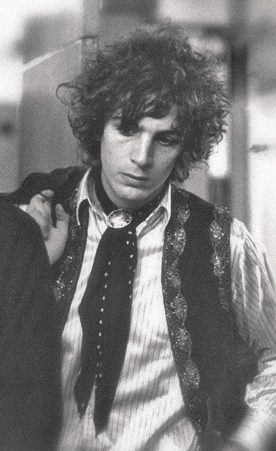
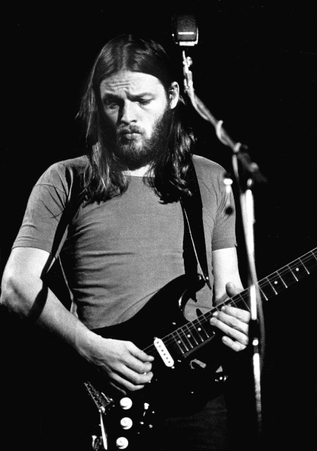
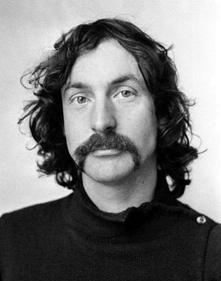
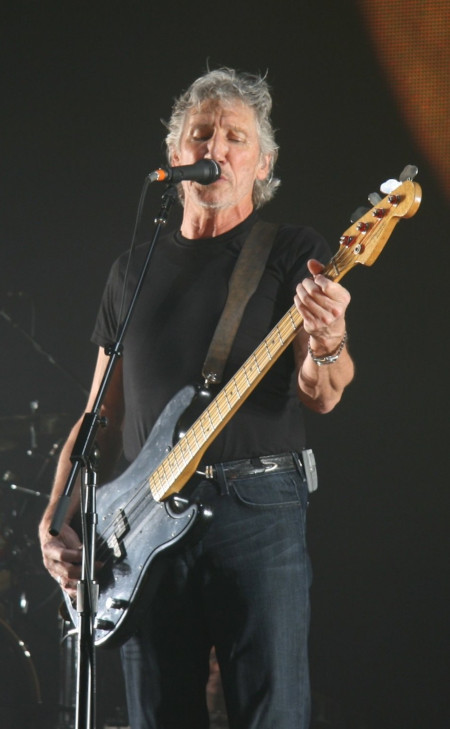
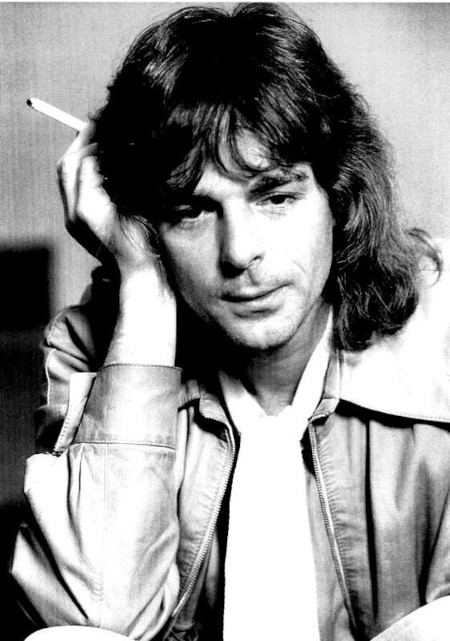

Syd Barrett

Roger Keith "Syd" Barrett (6 January 1946 – 7 July 2006) was an English singer, songwriter, and musician who co-founded the rock band Pink Floyd in 1965. As the band's frontman and primary songwriter, he contributed to four singles, their debut album The Piper at the Gates of Dawn (1967), and portions of their second album A Saucerful of Secrets (1968). In April 1968, Barrett was ousted from the band amid speculation of mental illness and his excessive use of psychedelic drugs. He began his solo career in 1969 with the single "Octopus" and followed with the solo albums The Madcap Laughs (1970) and Barrett (1970), recorded with the aid of several members of Pink Floyd.
In 1972, Barrett left the music industry, retired from public life and strictly guarded his privacy until his death. He continued painting and dedicated himself to gardening. Pink Floyd recorded several tributes and homages to him, including the 1975 song suite "Shine On You Crazy Diamond" and the 1979 rock opera The Wall. In 1988, EMI released an album of unreleased tracks and outtakes, Opel, with Barrett's approval. He died of pancreatic cancer in 2006.
Barrett was musically active for less than ten years. Characterised for his whimsical take on psychedelia,[2] English-accented singing, and free-form playing,[3] his innovative use of glissando-style guitar, dissonance, distortion, studio effects, and feedback proved influential to many musicians.
David Gilmour

David Jon Gilmour CBE (/ˈɡɪlmɔːr/ GHIL-mor; born 6 March 1946) is an English musician who was a member of the progressive rock band Pink Floyd. He joined as guitarist and co-lead vocalist in 1968 shortly before the departure of founding member Syd Barrett.[1] Pink Floyd achieved international success with the concept albums The Dark Side of the Moon (1973), Wish You Were Here (1975), Animals (1977), and The Wall (1979). By the early 1980s, they had become one of the highest-selling and most acclaimed acts in music history; by 2012, they had sold more than 250 million records worldwide, including 75 million in the United States.[2] Following the departure of Roger Waters in 1985, Pink Floyd continued under Gilmour's leadership and released three more studio albums.
Gilmour has produced a variety of artists, such as the Dream Academy, and has released four solo studio albums: David Gilmour, About Face, On an Island, and Rattle That Lock. He is also credited for bringing singer-songwriter Kate Bush to public attention. As a member of Pink Floyd, he was inducted into the US Rock and Roll Hall of Fame in 1996, and the UK Music Hall of Fame in 2005. In 2003, Gilmour was made a Commander of the Order of the British Empire (CBE). He was awarded with the Outstanding Contribution title at the 2008 Q Awards.[3] In 2011, Rolling Stone magazine ranked him number 14 in their list of the greatest guitarists of all time.[4] He was also voted number 36 in the greatest voices in rock by Planet Rock listeners in 2009.[5]
Gilmour has taken part in projects related to issues including animal rights, environmentalism, homelessness, poverty, and human rights. He has married twice and is the father of eight children.
Nick Mason

Nick Mason is the drummer of Pink Floyd and the only member to have remained in the group for its entire existence. Born Nicholas Berkeley Mason on January 27, 1944 in the Downshire Hills area of Birmingham, England, he met future bandmates Roger Waters and Rick Wright while studying architecture at Regent Street Polytechnic. He began playing with them in Sigma 6 in 1963, and in the Screaming Abdabs the following year, and in 1965 the Syd Barrett-led blues/R&B outfit that soon became Pink Floyd. Although drumming for Floyd was far and away Mason's primary concern over the next few decades, he did occasionally delve into extracurricular projects. He moonlighted as a producer during the '70s (particularly during the latter half of the decade), working not just with fellow proggers like Robert Wyatt, Gong, and Steve Hillage, but also post-bop jazz eccentric Michael Mantler and punk group the Damned. In 1981, Mason released his first album under his own name, Fictitious Sports. The music was a quirky blend of jazz and rock composed by Carla Bley, who also played keyboards; other supporting musicians included vocalist Wyatt, trumpeter Mantler, and guitarist Chris Spedding. In turn, Mason played drums with Mantler off and on throughout the '80s, including on the albums Something Else (1982) and Live (1987). Mason also formed a production company with former 10cc guitarist Rick Fenn, which produced music for films (including White of the Eye), television, and advertisements. As Mason + Fenn, the two also recorded a pop album in 1985 called Profiles, which produced the David Gilmour-sung single "Lie for a Lie." As Floyd's recording and touring schedule grew more sporadic, Mason was left with more time to pursue his favorite hobby, auto racing. Mason returned to the stage in 2002, joining Waters on the final two nights of his world tour; he would go on to appear on subsequent Waters' tours, albeit sporadically. He reunited with the full classic Pink Floyd Lineup in 2005, where they performed a short set at Live 8's London show. Mason continued to crop up over the years, including a performance at the closing ceremony of the 2012 Olympic Games. His first new band in over two decades emerged in 2018, calling themselves Nick Mason's Saucerful of Secrets they were something of a supergroup, featuring bassist Guy Pratt (Pink Floyd, David Gilmour), guitarist Lee Harris (Blockheads), vocalist Gary Kemp (Spandau Ballet), and producer Dom Beken on keys; the band focus on playing Pink Floyd's early material.
Roger Waters

George Roger Waters (born 6 September 1943) is an English songwriter, singer, bassist, and composer. In 1965, he co-founded the progressive rock band Pink Floyd. Waters initially served solely as the bassist, but following the departure of singer-songwriter Syd Barrett in 1968, he also became their lyricist, co-lead vocalist, and conceptual leader.
Pink Floyd achieved international success with the concept albums The Dark Side of the Moon (1973), Wish You Were Here (1975), Animals (1977), and The Wall (1979). By the early 1980s, they had become one of the most critically acclaimed and commercially successful groups in popular music; by 2013, they had sold more than 250 million albums worldwide. Amid creative differences, Waters left in 1985 and began a legal dispute over the use of the band's name and material. They settled out of court in 1987.
Waters' solo work includes the studio albums The Pros and Cons of Hitch Hiking (1984), Radio K.A.O.S. (1987), Amused to Death (1992), and Is This the Life We Really Want? (2017). In 2005, he released Ça Ira, an opera translated from Étienne and Nadine Roda-Gils' libretto about the French Revolution.
In 1990, Waters staged one of the largest rock concerts in history, The Wall – Live in Berlin, with an attendance of 450,000. As a member of Pink Floyd, he was inducted into the US Rock and Roll Hall of Fame in 1996 and the UK Music Hall of Fame in 2005. Later that year, he reunited with Pink Floyd bandmates Mason, Wright and David Gilmour for the Live 8 global awareness event, the group's first appearance with Waters since 1981. He has toured extensively as a solo act since 1999; he performed The Dark Side of the Moon in its entirety for his world tour of 2006–2008, and the Wall Live tour of 2010–13 was the highest-grossing tour by a solo artist at the time.
Richard Wright

Richard William Wright (28 July 1943 – 15 September 2008) was an English musician, composer, singer, and songwriter. He was a founding member, keyboardist, and vocalist of the progressive rock band Pink Floyd, performing on all but one of their albums and playing on all of their tours.[3]
Wright grew up in Hatch End, Middlesex and met future Pink Floyd bandmates Roger Waters and Nick Mason while studying architecture at the Regent Street Polytechnic. After being joined by frontman and songwriter Syd Barrett, the group found commercial success in 1967. Barrett's instability led to him being replaced by David Gilmour and Wright taking over songwriting duties with Waters. Initially a straightforward singer/songwriter, Wright later acted as an arranger to Waters and Gilmour's compositions. He began to contribute less towards the end of the 1970s and left the band after touring The Wall in 1981.
He rejoined the band as a session player in 1987 for A Momentary Lapse of Reason, and became a full-time member again for The Division Bell in 1994. Sessions with Wright during this period were later released on the album The Endless River. Away from Pink Floyd, Wright recorded two solo albums, including a collaboration with Anthony Moore on Broken China, and briefly formed the duo Zee. After rejoining Waters, Mason and Gilmour as Pink Floyd for Live 8 in 2005, he became part of Gilmour's regular solo touring band, singing occasional lead on songs such as "Arnold Layne", before his death in September 2008.
Overshadowed by bandmates, Wright's death brought a reappraisal and recognition of his talents. His jazz and improvisation influences and keyboard performances were an important part of the Pink Floyd sound. As well as being a prominent player of the Farfisa and Hammond organs and the Kurzweil synthesizer, Wright sang regularly in the band and occasionally took the lead vocal on songs such as "Time", "Remember a Day" and "Wearing the Inside Out".